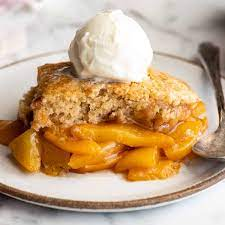

Peach Cobbler

Ingredients
- Peach
- Flour
- butter
- Sugar
- Lemon Juice
- Milk
Steps:
- Melt butter in a 13- x 9-inch baking dish.
- Combine flour, 1 cup sugar, baking powder, and salt; add milk, stirring just until dry ingredients are moistened. Pour batter over butter (do not stir).
- Bring remaining 1 cup sugar, peach slices, and lemon juice to a boil over high heat, stirring constantly; pour over batter (do not stir). Sprinkle with cinnamon, if desired.
- Bake at 375 for 40 min. Serve warm or cold
Back to Main